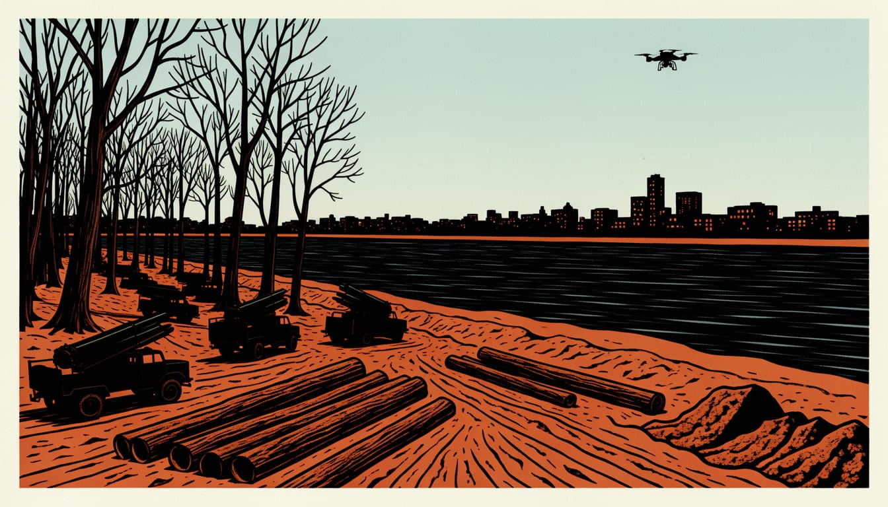

Officials fear heavy Russian shelling of Kherson resumes on Monday
The pause ends late on 1 November. Soldiers say lorries, Grad launchers and drones show Russia is preparing a bigger attack.

Kherson's deputy governor says he is very concerned that from Monday the Russians will start shelling Kherson heavily again. "This ceasefire gave them time to bring in military equipment, resupply their forces and rotate their units," he said. Ukrainian soldiers believe Russia is preparing a major attack on the city once the truce ends on 1 November.
The pause runs from 03:00 Kyiv time on 27 October to 22:59 on 1 November, according to Bild, Liga and NV. Melania Trump declared on Friday that "80 HOURS OF CEASEFIRE" were underway, with Russian and Ukrainian humanitarian teams delivering aid in Oleshky. The teams have also been preparing a civilian evacuation convoy there. Russian shelling of Kherson city has stopped during the truce, according to Liga.
Bild reports this, and the soldiers say the attack will very likely start immediately after the truce ends. The soldiers say Russian KamAZ lorries carrying combat units have been moving non-stop. They read this as preparation for the attack. Drone cameras watching Russian units have shown extensive military preparations, according to the Telegraph. The soldiers watch the movement of Russian units with these drone cameras themselves.
Ukrainian soldiers reported that the forest near Radensk has been packed with Grad rocket launchers, trees are being felled and timber taken away, and dugouts reinforced. Russian drone units are being moved closer to the Dnipro River, which one soldier said may indicate Russian attempts to cross the river once the ceasefire ends. "Once the ceasefire ends, the situation will definitely escalate," the soldier said. He cannot rule out landing troops crossing the Dnipro.
Kherson's deputy governor said he cannot tell how much Melania Trump helped with the evacuation, though she probably played some role. For Russia, he said, the truce is a good public relations opportunity. "They benefit in the media, and at the same time they can use the ceasefire to strengthen their positions on the left bank, resupply their forces and rotate military units," he said. Everyone gains from the pause, in his words, except Kherson.